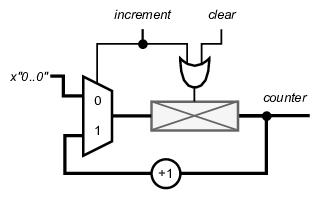
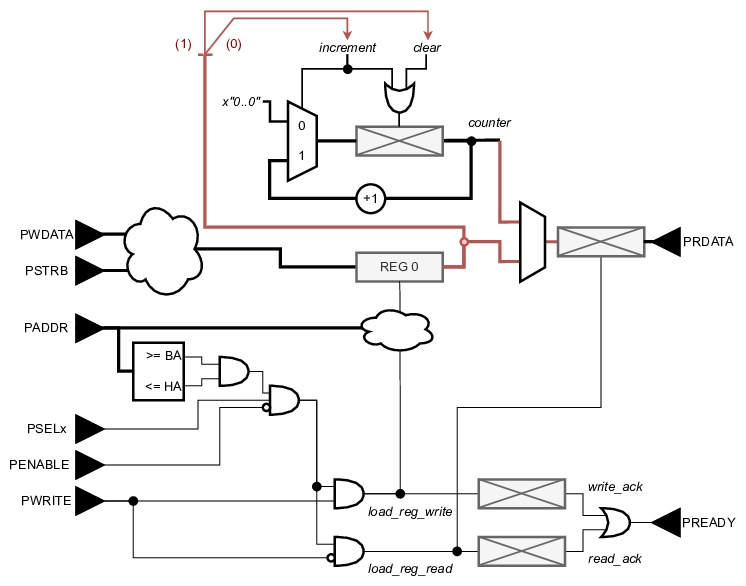
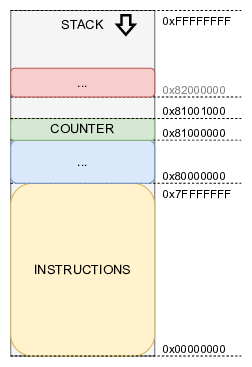
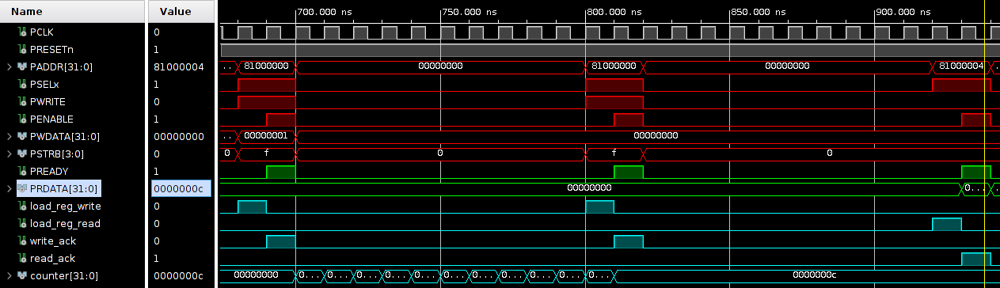

When a hardware/software codesign is made, we need to be able to measure the performance. A simple way to achieve this, is counting how many clock cycles certain operations take. Later on, this shall be revisited, but the peripheral will be useful (pinky swear).

Having arrived at your Master year, a counter is not exactly rocket science, nor brain surgery (lol). The simple design that is shown, is a counter that either be incremented or cleared.
Note that this is not a special component, but a simple register with a load. The multiplexer and the adder add the functionality of a counter to the register.
The counter that is described above has two 1-bit inputs and one 32-bit output. If we want to control this counter from the processor, these signals should be writeable/readable by the processor. For this the register approach from the previous section is used. One single register is used to “direct” the functional block. Such a register is often referred to as a command register (CR).

By simply wiring (for example) the LSB of REG 0 to the increment input of the counter, a link is made. Similarly the bit at index (1) of REG 0 can be mapped to the clear input. With this configuration, writing to REG 0 controls the counter.
The CR could also be read back. This will come in handy. Next to reading the CR, reading back the value of the counter might be useful. Otherwise, the peripheral would be sort-of pointless.
In earlier sections the memory was (briefly) discussed. As the SOC uses a 32-bit vector for addresses, this defines the memory space. The lowest addressable memory locations is 0x00000000 (aka zero), while the highest memory location is 0xFFFFFFFF (aka all foxes).
There is no doubt that you can write a program that takes 1'073'741'824 instructions (1 billion !!! Mind you, in Dutch this is “één miljard”). With SoCs it would be more realistic if the instruction memory is smaller than 4.3 TeraByte 😃. Typically the firmware indeed starts at address 0x0, but it is capped at a maximum.

To allow you to write loads of code, it is assumed (for this course) that the instruction memory will never be larger than 0x7FFFFFFF addresses. The remainder of the available memory space is reserved for segmentation.
This leaves half of the memory space to allocate as we see fit. As an example the segment for this counter peripheral is placed at address 0x8F000000. In OS-lingo this is called the Base Address (BA). When we assign for example 1024 addresses for the counter, the High Address (HA) is 0x8F000FFF.
You might have noticed that the PicoRV32 has a parameter that sets the address of the stack pointer.
parameter [31:0] STACKADDR = 32'h ffff_ffffWith the memory map as described above, simply writing (in software) the value 1 to address 0x81000000, will enable the counter. Writing a value 0, will stop the counter. To clear the value of the counter a value of 2 has to be written to the CR.
Note that a default write transfer writes 32 bits. Writing a value of 1 to the CR, will not only set the LSB to one, it also sets all other bits to zero !!
A default technique to set the bit with index 5 of CR, is to: 1) read the value of CR; 2)apply a mask so the 6th(!) bit is set, and 3) write back the result. This is the reason why it is also useful to be able to read back the value of CR.
CR |= (1«5); /* clearing can we done with: CR &= ~(1«5); */
One more thing to point out is double drivers. As you know, every gate can only be driven by a single source. The following scenario can be tempting.
Let’s assume 2 registers for this APB counter functional block. One could be assigned as the CR and the other one can act as a status register (SR). In the example above this could be translate to REG 0 is CR and counter is SR.
Be aware that the counter cannot be used in the same way as REG 0. It should either be writeable through the APB (or any) bus, or through some other part of the design.
The example below shows a simulation. First, a write of the value 0x1 is done to address 0x81000000. This starts the counter. After a certain amount of time, a write of the value 0x0 is done to the same address. This stops the counter. Finally a read on address 0x81000004 is done to obtain the counter value.
